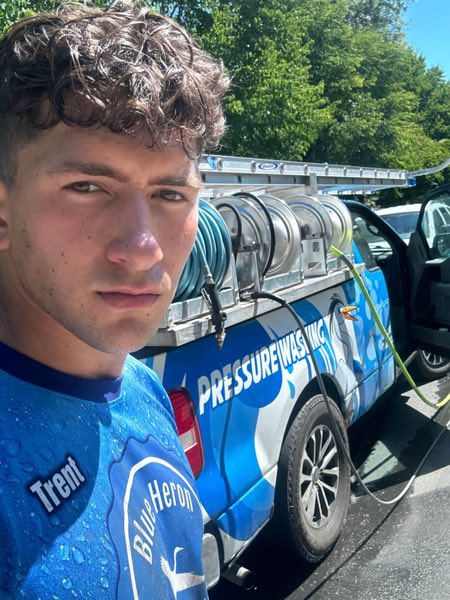

About
I didn't learn this in a webinar. I learned it on the truck.
I'm Trent Delgadillo. I dropped out at 16, built an exterior cleaning company to $243K a year, exited it, and built Shug into the growth partner I wish I'd been able to hire.

The pressure washer
I dropped out of high school at 16 and picked up a pressure washer.
No degree, no funding, no safety net. No one in my family had done anything like it. I learned the trade the way most people in it learn the trade — badly at first, one door at a time, on jobs I underpriced because I did not know better yet.
The work itself was never the hard part. Showing up, doing it right, and doing it again tomorrow is something you either have in you or you do not. What I did not have was any idea how a business is supposed to run underneath the work.
$243K, $143K net, and a $77K month
It grew anyway. Not because I was clever about it — because I answered every call and never turned down a job.
The best year was $243,000 in revenue with $143,000 net. One month cleared $77,000. In a trade where most operators never break six figures, those are real numbers and I am not going to pretend otherwise.
Here is what nobody tells you about hitting them. It did not feel like winning. It felt like being run by something. Every one of those dollars came through me personally — I sold the job, I did the work or supervised it, I answered the phone, I chased the invoice, I fixed the complaint. There was no version of a day off, because the business did not exist without me standing in the middle of it.
I was producing more than I ever had and there was no sense of success anywhere in it. I was too far in the weeds to see any of it.
The expensive lesson
By the second year I already knew it was not what I wanted long term. I ground it out for three more anyway.
That is the part I would take back. Not the trade, not the work — the three years of knowing and not moving. I was stressed, out of alignment, and telling myself that the next big month would fix a problem that had nothing to do with money.
What I eventually understood is that the owner is the engine, and everything that would have let me step out of the middle was infrastructure I never had time to build. A website that sold the job before I got there. A presence on Google that brought work in without me chasing it. Follow-up that happened whether or not I remembered.
None of that is exotic. It is just work that never gets done, because the person who would do it is on a ladder.
Selling everything
So I exited the company. Sold what I had, including most of what I owned, and left Portland with one backpack — laptop, chargers, and clothes.
It was not a sudden decision dressed up as one. It was three years of knowing followed by finally acting on it.
What I learned in the gap afterward is the thing this whole business is built on: bigger is not always better, and structure comes before growth. I had scaled revenue on top of no structure and it nearly took me with it.
Why Shug exists
I built Shug because I was tired of watching operators repeat the same two years for a decade. Making payroll, selling the next job, doing the finish work themselves. Trapped by a business they built to be free.
And because when I needed this, what was available was bad. Agencies that wanted twelve-month contracts and delivered in month nine. Coaches selling frameworks who had never carried a hose. Facebook groups full of guys three months in giving advice to guys ten years in.
The thing I actually needed was boring and specific: a site that booked jobs, a Google presence that got found, and follow-up that ran without me. Nobody would just build that and leave me alone about it.
So that is what Shug is. A website live in 24 hours. Local SEO so you get found first. Ads when the math justifies them. And the automations — missed calls texted back, reviews requested, old customers brought back — included rather than sold as an upgrade, because they are the difference between a website and a business.
What I believe about this trade
We are in the customer service industry and happen to fulfill a service. Cleaning, plumbing, roofing, whatever it is. Most people in the industry will not say that out loud. The operators who understand it charge more and keep customers longer.
Bigger is not always better. Structure first, growth second. I did it in the other order and it cost me three years.
You are the greatest asset you will ever own. Your health, your head, and your time horizon matter more than this quarter's revenue. I did not believe that at $77K a month. I believe it now.
How I work
No contracts. Month to month, cancel with one text, 30-day money back. You own the site, the domain, and the customer list.
The blueprint call is fifteen minutes with me. Not a rep, not a script. If your numbers do not support what you are asking about, I will tell you on that call rather than sell you the tier anyway.
I work with more than 50 operators across roofing, plumbing, HVAC, exterior cleaning, and landscaping. It grows slowly on purpose.
I am still figuring out how to show up on the days I do not want to. That has not changed. What changed is that I am no longer doing it inside a business that owns me.
$243K
Best-year revenue
$143K
Profit that year
$77K
Single best month
Straight answers
Questions people ask me.
Do you still run a trade business?
No. I exited the exterior cleaning company before founding Shug. That matters both ways — I am not competing with the operators I work for, and I am not speaking from a business I am currently inside.
How many operators do you work with?
More than 50. I keep the number honest rather than rounding it up, and I would rather cap it than take on more than I can personally answer for.
Do I actually talk to you, or to a rep?
Me. The blueprint call is fifteen minutes with me, not a salesperson working from a script. That is the main reason the client count grows slowly.
Why is it called Shug?
Short, easy to say on a phone, and it does not sound like a marketing agency. Trades businesses get pitched by companies with names full of words like digital and solutions. This is not that.
What if my trade is not one you list?
Tell me on the call. The five listed are where the patterns are strongest, but the underlying problem — get found, convert, follow up — is the same across home services. If it is not a fit I will say so.
Fifteen minutes, straight answers.
Drop your name and number. I'll call you personally within 24 hours — and I'll tell you if Shug is the wrong fit.
No contracts · Cancel anytime · Money-back guarantee · No spam